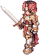
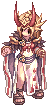
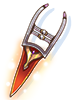
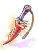
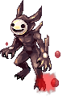
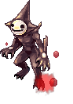

File list
Jump to navigation
Jump to search
This special page shows all uploaded files.
{kind=link}
{kind=link}
| Date | Name | Thumbnail | Size | User | Description | Versions |
|---|---|---|---|---|---|---|
| 02:56, 16 April 2016 | 2558 ifodes.png (file) |  | 3 KB | Renata | 1 | |
| 02:56, 16 April 2016 | 2559 licheniyes.png (file) |  |
3 KB | Renata | 1 | |
| 02:57, 16 April 2016 | 2560 odoric.png (file) |  |
3 KB | Renata | 1 | |
| 02:57, 16 April 2016 | 2561 ju.png (file) |  |
3 KB | Renata | 1 | |
| 02:58, 16 April 2016 | 2562 dwigh.png (file) |  | 3 KB | Renata | 1 | |
| 02:58, 16 April 2016 | 2563 fay kanavion.png (file) |  |
2 KB | Renata | 1 | |
| 03:01, 16 April 2016 | 2564 fenrir.png (file) |  |
2 KB | Renata | 1 | |
| 02:59, 16 April 2016 | 2565 alphonse.png (file) |  |
4 KB | Renata | 1 | |
| 03:00, 16 April 2016 | 2566 alphonse jr.png (file) |  |
1 KB | Renata | 1 | |
| 04:00, 28 February 2019 | 2575.png (file) |  |
550 bytes | Colours | 1 | |
| 20:41, 7 May 2019 | 25755.png (file) | 8 KB | Panic | 1 | ||
| 20:18, 17 May 2016 | 2576.png (file) |  |
790 bytes | Mayo | 1 | |
| 04:00, 28 February 2019 | 2578.png (file) |  |
457 bytes | Colours | 1 | |
| 19:46, 11 January 2016 | 2582.png (file) |  |
539 bytes | Tokeiburu | 1 | |
| 04:00, 28 February 2019 | 2583.png (file) |  |
553 bytes | Colours | 1 | |
| 23:29, 21 July 2021 | 25864.png (file) |  |
459 bytes | Pachangui | 1 | |
| 20:17, 17 May 2016 | 2587.png (file) |  |
530 bytes | Mayo | 1 | |
| 03:56, 28 February 2019 | 2591.png (file) |  |
550 bytes | Colours | 1 | |
| 03:54, 6 April 2016 | 28001 ES Ripper Katar.png (file) | 378 bytes | Renata | 1 | ||
| 00:56, 12 April 2016 | 28001 ES Ripper Katar HQ.png (file) | 3 KB | Renata | 1 | ||
| 08:20, 18 October 2016 | 28007.png (file) |  | 10 KB | Halves | 1 | |
| 07:48, 10 June 2016 | 28101 tornado axe.png (file) |  |
13 KB | Renata | 1 | |
| 07:09, 27 January 2017 | 28105 infinity two handed axe.png (file) | 10 KB | Renata | 1 | ||
| 08:20, 18 October 2016 | 28106.png (file) |  |
12 KB | Halves | 1 | |
| 18:09, 12 May 2016 | 28310.png (file) | 8 KB | Tokeiburu | 1 | ||
| 17:40, 1 September 2016 | 28326.png (file) | 7 KB | Mayo | 1 | ||
| 17:41, 1 September 2016 | 28327.png (file) |  |
6 KB | Mayo | 1 | |
| 23:01, 7 May 2019 | 28491.png (file) | 9 KB | Panic | 1 | ||
| 15:56, 3 May 2017 | 28603.png (file) |  |
8 KB | Tokeiburu | 1 | |
| 07:54, 18 October 2016 | 28604.png (file) |  |
8 KB | Halves | 1 | |
| 16:03, 3 May 2017 | 28616.png (file) |  |
8 KB | Tokeiburu | 1 | |
| 16:06, 3 May 2017 | 28617.png (file) |  |
6 KB | Tokeiburu | 1 | |
| 16:11, 3 May 2017 | 28619.png (file) |  |
6 KB | Tokeiburu | 1 | |
| 16:14, 3 May 2017 | 28620.png (file) |  |
8 KB | Tokeiburu | 1 | |
| 01:47, 6 May 2016 | 28623 random pet egg.PNG (file) |  |
3 KB | Renata | 1 | |
| 15:46, 3 May 2017 | 28624.png (file) |  |
6 KB | Tokeiburu | 1 | |
| 15:38, 3 May 2017 | 28625.png (file) |  |
5 KB | Tokeiburu | 1 | |
| 05:53, 14 May 2019 | 28629.png (file) |  |
543 bytes | Colours | 1 | |
| 05:56, 14 May 2019 | 28631.png (file) |  |
581 bytes | Colours | 1 | |
| 07:10, 27 January 2017 | 28703 infinity dagger.png (file) | 9 KB | Renata | 1 | ||
| 08:17, 18 October 2016 | 28705.png (file) |  | 11 KB | Halves | 1 | |
| 11:08, 24 May 2016 | 28901.png (file) |  |
669 bytes | Mayo | 1 | |
| 04:19, 27 March 2016 | 28901 cursed mad bunny.png (file) |  |
11 KB | Renata | 1 | |
| 15:05, 12 September 2018 | 28913.png (file) | 10 KB | I Know To Write | Ultralight Magic Shield#Werner's Laboratory | 1 | |
| 23:04, 29 August 2022 | 28 Gernoz.png (file) | 828 KB | Hurt Locker | 1 | ||
| 05:26, 7 April 2016 | 2938 magic seal.png (file) | 2 KB | Renata | 1 | ||
| 04:57, 7 April 2016 | 2939 evil shadow.png (file) |  | 5 KB | Renata | 1 | |
| 04:58, 7 April 2016 | 2940 evil shadow.png (file) |  | 5 KB | Renata | 1 | |
| 04:58, 7 April 2016 | 2941 evil shadow.png (file) |  |
5 KB | Renata | 1 | |
| 08:36, 6 April 2016 | 2942 evil believer.png (file) | 39 KB | Renata | 1 |
{kind=link}
{kind=link}
{kind=link}
{kind=link}
{kind=link}
{kind=link}
{kind=link}
{kind=link}
{kind=link}
{kind=link}
{kind=link}
{kind=link}
{kind=link}
{kind=link}
{kind=link}
{kind=link}
{kind=link}
{kind=link}
{kind=link}
{kind=link}
{kind=link}
{kind=link}
{kind=link}
{kind=link}